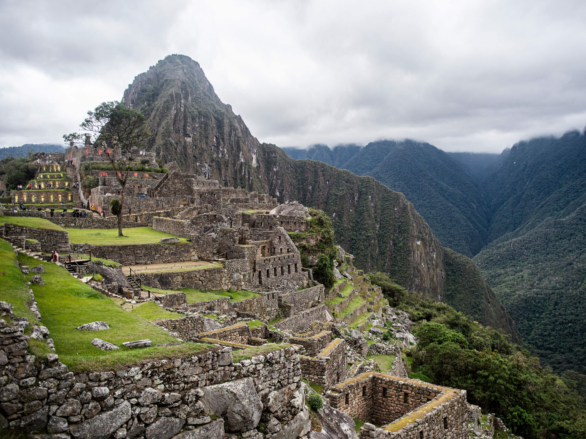

Machu Pichu

Machu Picchu (en quechua, Machu Pikchu 'monte o
pico viejo', pronunciado /ˈmɐt͡ʃʊ ˈpɪkt͡ʃʊ/) es el
nombre contemporáneo que se da a una llacta (antiguo
poblado incaico) construida antes del siglo xv, en
la cordillera Oriental del sur del Perú, en la cadena
montañosa de los Andes a 2430 metros sobre el nivel del mar.